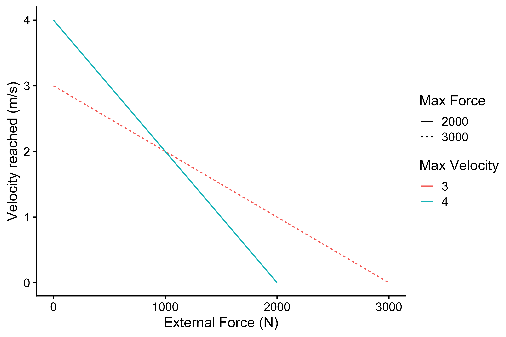

Introduction to vjsim
Mladen Jovanović
2020-01-24
Source:vignettes/introduction-vjsim.Rmd
introduction-vjsim.RmdIntroduction
vjsim is R package that simulates vertical jump with the aim of teaching basic biomechanical principles, FV profiling, and exploring assumptions of FV optimization models.
A vertical jump can be done in multiple ways. One way is to quickly dip down and then rebound as high as possible. This vertical jump contains countermovement action, which increases vertical jump height due to various mechanisms (which are not in our interest for this simulation). Another way involves squatting down, holding the squat position for a second or two, and then exploding upward without any dip. This can be considered purely concentric (or static) jump, and it is usually termed squat jump to be differentiated from the countermovement jump. The hands are typically held at the hip, without allowing any swinging action. In vjsim only the squat jump is simulated and analyzed. Thus, when I refer to vertical jump, I refer to a static squat jump with arms continuously held at the hips.
In vjsim, the vertical jump is represented with a simple mechanical model (see Figure).
Mechanical model that is used to represent vertical jump
The athlete is represented as a simple moving object that needs to be propelled over push-off distance (\(d_{po}\)measured in meters; usually around 0.4m for human subjects) by the action of the Force Generator. Moving object has a mass (or inertia) (\(m\), measured using kilograms (kg)) and weight (\(w\); measured in Newtons (N)). Weight is calculated by multiplying mass with the gravity constant, that is equal to 9.81 for the planet Earth:
\[w = m \times 9.81(N)\]
If the external load, e.g. barbell, is carried, the mass of the object is equal to athlete bodyweight plus the external load (mass). For example, if the athlete weights 75kg and takes 100kg on his shoulder, the total mass is equal to 175kg, and weight is equal to \(175 \times 9.81\) or 1,717N.
Vertical jump height (\(h\); measured in meters (m)) can be calculated with a simple ballistic equation from the known take-off velocity (\(v_{to}\); measured in meters per second (m/s)):
\[ h = \frac{v_{to}^2}{2\times9.81}(m) \]
In the vertical jump (i.e. static/concentric squat jump), the initial velocity is assumed to be 0m/s. Jump angle is expected to be 90degrees, and of course, gravity constant is 9.81\(m/s^2\) (since we are interested in jumps on Earth, duh).
For example, if take-off velocity is equal to 3m/s, the calculated height reached is equal to:
\[ h = \frac{v_{to}^2}{2\times9.81}(m) \]
\[ h = \frac{3^2}{19.62}(m) \] \[ h = \frac{9}{19.62}(m) \] \[ h = 0.46(m) \]
Please note that the bodyweight (or the object mass) doesn’t influence the height reached. What bodyweight influences, though, is the take-off velocity reached given characteristics of the Force Generator.
Force Generator
Force Generator is believed to be some entity in the lower body with distinct characteristics. In vjsim, these characteristics are: (1) force-length, (2) force-time, and (3) force-velocity characteristics (see Figure).

Force Generator characteristics
Force-Length Characteristic
The main characteristic of the Force Generator is the ability to produce force. Thus the main parameter of the Force Generator is the max force (\(F_{max}\)), or the maximal force that Force Generator is capable of producing.
Unfortunately, Force Generator cannot express 100% of the maximal force across the whole push-off distance. Assuming isometric conditions (i.e. we move the Force Generator at a particular position alongside push-off distance and hold it firmly there), at a particular point in the push-off distance, Force Generator can express certain force percentage of the max force. The shape of this relationship (i.e. force percentage ~ percent of push-off distance) represents the Force-Length characteristic of the Force Generator.
The following code and Figure contains few examples how this relationship is modeled in vjsim using the vjsim::fgen_get_force_percentage1 function. Rather than using raw distance (in meters), vjsim::fgen_get_force_percentage uses perceon of the push-off distance (push_off_percent). Force-Length characteristic implemented in the vjsim depends on two parameters: starting percentage (start_perc) and threshold (threshold). The starting percentage indicated the force percentage at the start of the vertical jump (\(d=0m\), \(t=0s\)), while the threshold indicates the percent of push-off distance where force percentage is equal to 100%. The typical values for the starting percentage are between 0.6 and 0.8, and for the threshold between 0.8 and 0.9.
# Install vjsim if you haven't already by running the following commands
# install.packages("devtools")
# devtools::install_github("mladenjovanovic/vjsim")
# Install tidyverse and cowplot packages
# install.packages(c("tidyverse", "cowplot"), dependencies = TRUE)
library(vjsim)
library(tidyverse)
library(cowplot)parameters <- expand.grid(
push_off_perc = seq(0, 1.05, length.out = 1000),
start_perc = c(0.6, 0.8),
threshold = c(0.8, 0.9)
)
force_length <- parameters %>%
mutate(
force_perc = vjsim::fgen_get_force_percentage(
push_off_perc = push_off_perc,
start_perc = start_perc,
threshold = threshold
),
threshold_label = factor(threshold),
start_perc_label = factor(paste("Start perc =", start_perc))
)
ggplot(
force_length,
aes(
x = push_off_perc,
y = force_perc,
group = threshold_label,
color = threshold_label
)
) +
theme_cowplot(12) +
geom_line() +
facet_wrap(~start_perc_label) +
xlab("% Push-off distance") +
ylab("Force percentage") +
labs(color = "Threshold")Force-Length characteristic
Force-Time Characteristic
Besides being able to achieve only force percentage at a given percent of the push-off distance, Force Generator cannot be activated instantaneously. It takes time (\(t\)) to reach full activation level. Let’s assume here that “no activation” equals to 0%, while “full activation” equals 100% of the activation level. The shape of this relationship (i.e. activation level ~ time) represents the Force-Time characteristic of the Force Generator.
In vjsim, this characteristic is represented with the sigmoid curve using the vjsim::fgen_get_activation function. Parameter of this curve (and function), and thus Force-Time characteristic, is the time to max activation (time_to_max_activation). Time to max activation represents time it takes to reach full activation (100%) from zero activation.
But at the beginning of the vertical jump push-off (\(d=0m\) and \(t=0s\)) there is some activation needed due to the weight of the load that needs to be supported. Reaching full activation from some initial activation takes less time than reaching full activation from zero activation for the same time to the max activation parameter. This represents an assumption in the vjsim and vjsim::fgen_get_activation function. The code and Figure below demonstrate this relationship.
parameters <- expand.grid(
current_time = seq(0, 0.6, length.out = 1000),
initial_activation = c(0, 0.2, 0.5),
time_to_max_activation = c(0.3, 0.5)
)
force_time <- parameters %>%
mutate(
activation = vjsim::fgen_get_activation(
current_time = current_time,
initial_activation = initial_activation,
time_to_max_activation = time_to_max_activation
),
initial_activation_label = factor(initial_activation),
time_to_max_activation_label = factor(paste("Time to max activation =", time_to_max_activation)),
)
ggplot(
force_time,
aes(
x = current_time,
y = activation,
group = initial_activation_label,
color = initial_activation_label
)
) +
theme_cowplot(12) +
geom_line() +
facet_wrap(~time_to_max_activation_label) +
xlab("Time (s)") +
ylab("Activation") +
labs(color = "Initial activation")Force-Time characteristic
As already explained in the Force-Length characteristic, Force Generator at a particular percent of the push-off distance can generate only a percent of max force (e.g. 80% at the beginning of the vertical jump push-off; \(d=0\) and \(t=0\)). Combining max force and force percentage gives us the potential force (\(F_{potential}\)) that can be reached with the full activation. For example, if the max force is equal to 3,000N, and force percentage at a particular percent of the push-off distance is 90%, the potential force is equal to 2,700N. But as explained, this force cannot be reached instantaneously due to Force-Time characteristics of the Force Generator. This potential force can only be reached when full activation is reached. The product of the activation level and potential force yields generated force (\(F_{generated}\)).
How is initial activation calculated assuming max force, force percentage, and weight? In vjsim, initial activation is calculated with the following equation:
\[ Activation_{initial} = \frac{w}{F_{potential}} \]
The following code and Figure demonstrates this calculus and the effects of the assumptions.
parameters <- expand.grid(
current_time = seq(0, 0.5, length.out = 1000),
max_force = 3000,
weight = c(75 * 9.81, 85 * 9.81),
force_percentage = c(0.6, 0.8),
time_to_max_activation = c(0.3, 0.5)
)
force_time <- parameters %>%
mutate(
potential_force = max_force * force_percentage,
initial_activation = weight / potential_force,
activation = vjsim::fgen_get_activation(
current_time = current_time,
initial_activation = initial_activation,
time_to_max_activation = time_to_max_activation
),
generated_force = activation * potential_force,
weight_label = factor(weight),
time_to_max_activation_label = factor(paste("Time to max activation =", time_to_max_activation)),
force_percentage_label = factor(force_percentage)
)
ggplot(
force_time,
aes(
x = current_time,
y = activation,
color = weight_label,
linetype = force_percentage_label
)
) +
theme_cowplot(12) +
geom_line() +
facet_wrap(~time_to_max_activation_label) +
xlab("Time (s)") +
ylab("Activation") +
labs(color = "Weight (N)", linetype = "Force Percentage")Calculating initial activation
ggplot(
force_time,
aes(
x = current_time,
y = generated_force,
color = weight_label,
linetype = force_percentage_label
)
) +
theme_cowplot(12) +
geom_line() +
facet_wrap(~time_to_max_activation_label) +
xlab("Time (s)") +
ylab("Generated Force (N)") +
labs(color = "Weight (N)", linetype = "Force Percentage")Calculating initial activation
Force-Velocity Characteristic
So far, the Force-Length and Force-Time characteristics assumed static conditions or \(v=0m/s\). In plain English, we used isometric or static conditions by holding the Force Generator and probing it. But once the Force Generator starts moving, there is an additional component that is modeled with the viscous properties:
\[ F_{viscuous} = k \times v \]
In real-life, the faster the muscles (i.e. Force Generator) are shortening, the less force they can exert. The mechanism behind this is not really understood (pardon my ignorance if I am wrong), but it is hypothesized that it is due to the shortening of the time cross-bridges in the muscle cell have to perform the cycling. Another explanation might be an increase in the viscous forces inside the muscle, that resist movement. Anyway, this phenomenological characteristic (i.e. muscle or Force Generator decrease force production as velocity increases) can be modeled with the above equation. The higher the \(k\) parameter, the bigger the resistance.
Let’s assume that the max force is 2700N and that \(k=675\). In unconstrained conditions (hypothetical conditions where Force Generator has unlimited push-off distance, unlimited time, zero external load, and maximal force percentage) the max velocity is achieved when max force becomes equal to viscous force:
\[ F_{max} = F_{viscous} \]
\[ 2700 = k \times v \]
\[ 2700 = 675 \times v \]
\[ v = \frac{2700}{675} \]
\[ v = 4 (m/s) \]
In other words:
\[ v_{max} = \frac{F_{max}}{k} \]
Rather than using \(k\) as a parameter (which is not very intuitive), we can use max velocity as a parameter of this Force Generator component. Max velocity and max force represent intrinsic characteristics of the Force Generator. Please note that the max velocity parameter represents maximal velocity Force Generator can achieve in the unconstrained environment (unlimited Push-off Distance and no external resistance; i.e. force).
Using the vjsim::fgen_get_viscous_force function, we can get viscous or opposing force inside the Force Generator.
parameters <- expand.grid(
current_velocity = seq(0, 4.5, length.out = 1000),
max_force = c(2000, 2500, 3000),
max_velocity = c(2, 3, 4)
)
force_velocity <- parameters %>%
mutate(
force = vjsim::fgen_get_viscous_force(
current_velocity = current_velocity,
max_force = max_force,
max_velocity = max_velocity
),
max_velocity = factor(max_velocity),
max_force_label = factor(paste("Max Force = ", max_force))
)
ggplot(
force_velocity,
aes(
x = current_velocity,
y = force,
group = max_velocity,
color = max_velocity
)
) +
theme_cowplot(12) +
geom_hline(aes(yintercept = max_force), linetype = "dashed") +
geom_line() +
facet_wrap(~max_force_label) +
xlab("Velocity (m/s)") +
ylab("Viscous Force (N)") +
labs(color = "Max Velocity")Force-Velocity characteristic
The above Figure represents intrinsic viscous force generated at particular velocities. Assuming unconstrained conditions, we are interested in estimating maximal velocity that can be achieved when the Force Generator faces some external resistance. Since we are assuming unconstrained conditions, the mass of the resistance is not important (due unlimited Push-off Distance to accelerate), but only the facing external resisting force. The Force Generator faces two opposing forces then: external resistance force and viscous force (which is internal or intrinsic part of the Force Generator itself). Peak velocity is achieved when the sum of forces is equal to zero. I keep saying the sum of force, because \(F_{viscous}\) and \(F_{external}\) are in the opposite direction to \(F_{max}\); thus, they have a negative sign.
Please note the difference between peak velocity, which is the maximal velocity that can be reached in unconstrained conditions at a particular level of the external resistance force, a maximal velocity, which is “maximal” maximal velocity that can be reached in unconstrained conditions when there iz zero external resistance force.
\[ F_{max} - F_{viscous} - F_{external} = 0 \]
If we shift the forces around, we get the following:
\[ F_{viscous} = F_{max} - F_{external} \]
\[ (k \times v) = F_{max} - F_{external} \]
\[ v_{peak} = \frac{F_{max} - F_{external}}{k} \]
If we use the equation \(v_{max} = \frac{F_{max}}{k}\) to get \(k\), we get the following equation to calculate \(v_{peak}\):
\[ v_{peak} = \frac{F_{max} - F_{external}}{\frac{F_{max}}{v_{max}}} \]
Assuming few combinations of max force and a max velocity of the Force Generator, depending on the level of facing external resistance (N), we can calculate peak velocity (\(v\)) that can hypothetically be reached in the unconstrained conditions. You can use the above equation, or the vjsim::fgen_get_velocity function.
parameters <- expand.grid(
external_force = seq(0, 3000, length.out = 1000),
max_force = c(2000, 3000),
max_velocity = c(3, 4)
)
velocity_reached <- parameters %>%
filter(
external_force < max_force
) %>%
mutate(
velocity_reached = vjsim::fgen_get_velocity(
external_force = external_force,
max_force = max_force,
max_velocity = max_velocity
),
max_velocity = factor(max_velocity),
max_force_label = factor(max_force),
id = paste(max_force, max_velocity)
) %>%
filter(id %in% c("2000 4", "3000 3"))
ggplot(
velocity_reached,
aes(
x = external_force,
y = velocity_reached,
color = max_velocity,
linetype = max_force_label
)
) +
theme_cowplot(12) +
geom_line() +
ylab("Velocity reached (m/s)") +
xlab("External Force (N)") +
labs(color = "Max Velocity", linetype = "Max Force")
The above represent unconstrained Force Generator Force-Velocity profile. It is the intrinsic (or latent) quality (characteristic or trait) of the Force Generator that can be manifested when Force Generator faces external force under unconstrained conditions.
Unfortunately, the Force Generator functions in the constrained environment, facing particular inertia (bodyweight and external load) and limited distance over which that inertia can be accelerated (i.e. push-off distance). Plus, there are Force-Length and Force-Time characteristics that will affect performance in the constrained environment.
How will these affect the constrained, or manifested, Force Generator force-velocity profile? This is what (among a few other things) we are interested in figuring out by using the vjsim simulations. This is discussed in simulation-vjsim vignette.
Let’s quickly review the parameters of the Force Generator and the simulation in general before finishing this vignette.
List of Force Generator Parameters
Parameters of the system are the following:
Mass (inertia) and weight (\(mass \times 9.81\)) represent load that the Force Generator needs to accelerate. These involve bodyweight and additional external load, such as extra weight (e.g. BW + 60kg).
Push-off Distance, or the limited distance over which the Force Generator can accelerate the mass object.
Parameters of the Force Generator involve the following:
Max force, which is the ultimate force that Force Generator can manifest in isometric conditions with 100% Force-Length relationship.
Max velocity, which is the final velocity that Force Generator can manifest in unconstrained conditions (unlimited Push-off Distance and zero external resistance).
Max force and max velocity represent unconstrained Force Generator Force-Velocity profile.
Force-Length characteristic has two parameters: start perc and threshold.
Force-Time characteristic has one parameter: time to max activation. Initial activation parameter is (or should be) automatically calculated to represents the activation needed to support the weight of the moving object (i.e. \((bodyweight + external \; load) \times 9.81\)). This is required since the vertical jumps start from a dead start. Initial activation will not be considered a parameter that can vary in the simulations.
The schematic diagram on the Figure below depicts all the essential concepts covered so far that are important for further analysis and simulation.
Schematic diagrom of the components, parameters, and resulting forces in vjsim
The force generation mechanism is a follows:
- Max force of the Force Generator represent major parameter, together with Max Velocity
- Based on the current position (\(d\); where \(d=0m\) is the position of the push-off start) on the Push-off Distance, based on the Force-Length characteristic, particular force percentage limits the potential force than can be expressed
- Based on the current time (\(t\); where \(t=0s\) is the moment of the push-off start), particular level of activation is reached due to the Force-Time characteristic
- Generated force is the product of the level of activation and potential force
- Due to the Force-Velocity characteristic, viscous force is deducted from generated force to yield ground reaction force (GRF).
- Before deducting viscous force from the generated force, viscous force needs to be scaled-down using force percentage. In a more complex simulation, the viscous force would have its own Force-Length characteristic, but in this simple version, we are going to assume it is the same as Force-Length characteristic for the max force. If we do not scale viscous force, at the last moments before the take-off, due to sudden drop of force percentage to 0, the viscous force would be much higher than the generated force, which would yield negative ground reaction force (which is impossible for a jump).
- Ground reaction force (GRF) is the force acting on the load. GRF is the most important force in the
vjsim, since it represents the force usually tracked in the sports science. - GRF is acting on the load object, but load also has weight. To get propulsive force, we need to deduct weight from the GRF
- Once we have propulsive or net force, to calculate acceleration, we need to divide it with load inertia or mass
This whole process is integrated in the vjsim::fgen_get_output function. This function calculates all the forces and acceleration based on the current_time, current_distance, current_velocity, as well as the other system constraints and parameters of the Forge Generator.
state <- expand.grid(
current_time = seq(0, 0.25, length.out = 1000),
current_distance = c(0.1, 0.15, 0.2, 0.25, 0.3),
current_velocity = 0
)
fgen_data <- vjsim::fgen_get_output(
current_time = state$current_time,
current_distance = state$current_distance,
current_velocity = state$current_velocity,
mass = 75,
push_off_distance = 0.4,
max_force = 3000,
max_velocity = 4,
start_perc = 0.8,
threshold = 0.9,
time_to_max_activation = 0.3
)
as_tibble(as.data.frame(fgen_data))
#> # A tibble: 5,000 x 22
#> kinematics.curr… kinematics.curr… kinematics.curr… system_constrai…
#> <dbl> <dbl> <dbl> <dbl>
#> 1 0 0.1 0 75
#> 2 0.000250 0.1 0 75
#> 3 0.000501 0.1 0 75
#> 4 0.000751 0.1 0 75
#> 5 0.00100 0.1 0 75
#> 6 0.00125 0.1 0 75
#> 7 0.00150 0.1 0 75
#> 8 0.00175 0.1 0 75
#> 9 0.00200 0.1 0 75
#> 10 0.00225 0.1 0 75
#> # … with 4,990 more rows, and 18 more variables:
#> # system_constraints.weight <dbl>,
#> # system_constraints.push_off_distance <dbl>,
#> # system_constraints.gravity_const <dbl>, fgen_parameters.max_force <dbl>,
#> # fgen_parameters.max_velocity <dbl>, fgen_parameters.start_perc <dbl>,
#> # fgen_parameters.threshold <dbl>,
#> # fgen_parameters.time_to_max_activation <dbl>,
#> # fgen_parameters.initial_activation <dbl>, fgen_output.push_off_perc <dbl>,
#> # fgen_output.force_percentage <dbl>, fgen_output.potential_force <dbl>,
#> # fgen_output.activation <dbl>, fgen_output.generated_force <dbl>,
#> # fgen_output.viscous_force <dbl>, kinetics.ground_reaction_force <dbl>,
#> # kinetics.propulsive_force <dbl>, kinetics.acceleration <dbl>Want to learn more?
Please continue by reading “Simulation in vjsim” (LINK) vignette:
vignette("simulation-vjsim")You can either use
vjsim::fgen_get_force_percentageor simplyfgen_get_force_percentage. I am using prefixvjsim::to indicate functions from thevjsimpackage↩︎